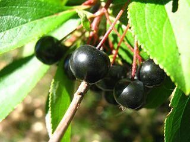
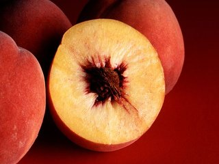
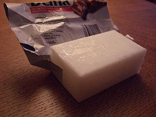

1. ARONIA BERRY

Native to North America, aronia berries are packed with antioxidants proven to shrink colon cancer tumors in days. Combined with tumeric, research has proven it a potent killer of certain brain cancers. It is also effective at fighting breast and cervical cancer tumors.
Research
2. PEACHES

Native to NorthWest China, peaches are a sweet juicy treat. Research confirms that 3 peaches a day, (freezed dried, frozen or fresh) can help prevent breast cancer and begins producing breast cancer cell death in 12 days. One great way to consume 3 peaches a day is in smoothies.
Research
3. COCONUT OIL

Coconut oil is the edible oil extracted from a mature coconut. Health benefits derive from the medium chain triglycerides (MCT) that make up the oil. MCT's convert to ketones that serve as alternative food for a brain unable to receive glucose due to Alzheimer's disease. Improvement is noted in under a week.
Research